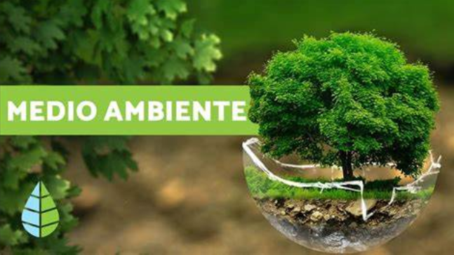

Juntos, podemos trabajar hacia un futuro más sostenible y cuidar nuestro entorno natural 🌿🌎.
¿Qué es el medio ambiente?
March 16, 2024 | Posted by "Medio ambiente". Autor: Equipo editorial, Etecé. De: Argentina. Para: Concepto.de. Disponible en: https://concepto.de/medio-ambiente/. Última edición: 14 de julio de 2022. Consultado: 16 de marzo de 2024 | Archivado en https://concepto.de/medio-ambiente/,

El medio ambiente es el espacio en el que se desarrolla la vida de los organismos y que permite su interacción. Está conformado por seres vivos (factores bióticos), por elementos sin vida (factores abióticos) y por elementos artificiales creados por el hombre.
Cuba: Protección del medio ambiente, una prioridad
La protección del medio ambiente en Cuba es una prioridad gubernamental. El país ha implementado políticas específicas tales como el Macroprograma de Recursos Naturales y Medio Ambiente que, a su vez, responde a las prioridades establecidas en el Plan Nacional de Desarrollo Económico y Social de la nación. El Plan de Estado para el Enfrentamiento al Cambio Climático, conocido como Tarea Vida, por ejemplo, experimenta ajustes con el propósito de brindar una atención más específica a los aspectos sociales, y a la necesidad de involucrar a los científicos y a la población en la solución de los problemas de las comunidades. Cuba se ha comprometido a cumplir dos objetivos internacionales para el año 2030: reducir globalmente en un 30% las emisiones de metano con respecto a 2020 y poner fin a la deforestación, además de transitar hacia un uso sostenible de la tierra. Para lograr una protección efectiva del medio ambiente, es crucial que los promotores ambientales comprendan las subjetividades de la población y establezcan una conexión entre la acción legislativa y las características particulares de cada territorio.
Sidebar Menu
Referencia
- Concepto de RRD:
Reducción del Riesgo de Desastres - La Universidad al servicio del Medio Ambiente
- Cubadebate
La educacion superior tiene que asumir un papel cada vez mas protagonico -
ONU Programa para el Medio Ambiente
Reducción del Riesgo de Desastres Basada en Ecosistemas - Ecured
- Universidad de las Ciencias Informáticas
UCI